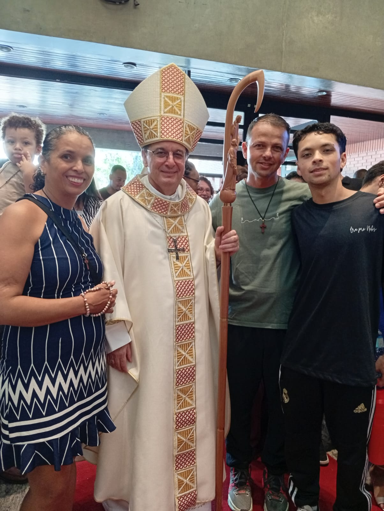
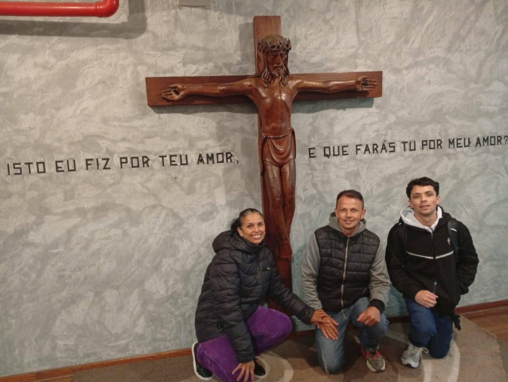
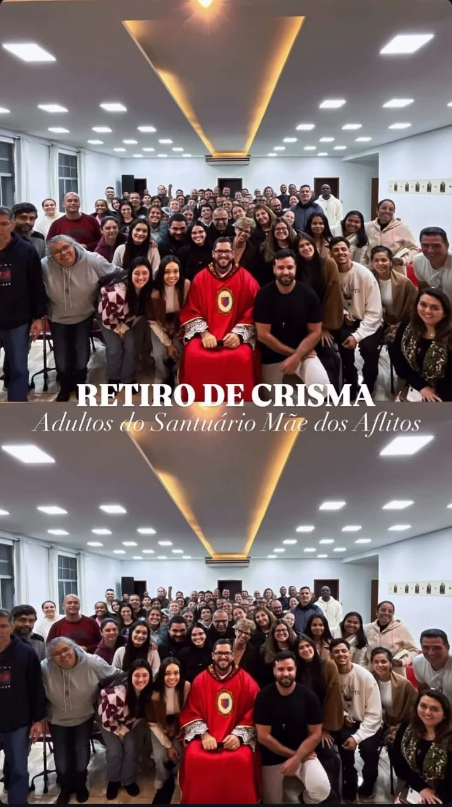
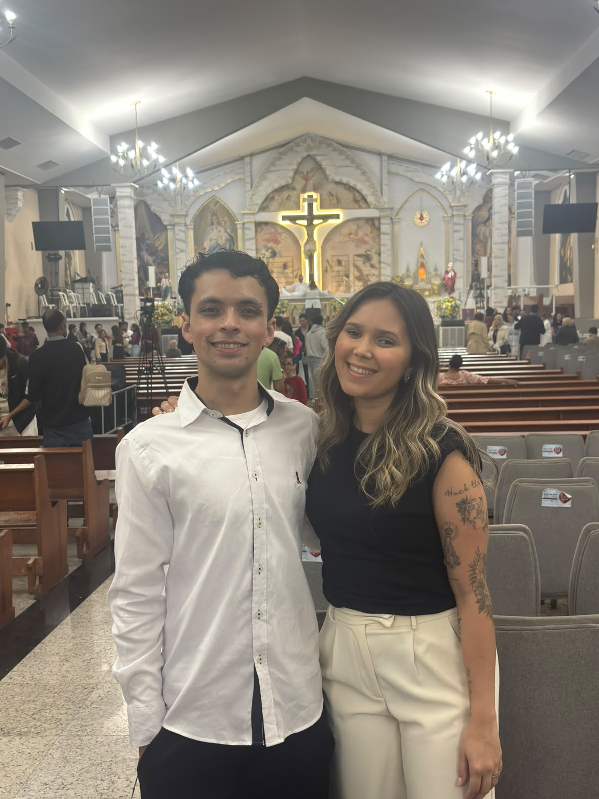

Passados 21 anos de vida afastados da Igreja, pulando de crença em crença, de filosofia em
filosofia, senti-me abraçado e convidado por Aquele quem é difícil recusar o chamado.
Não foi imediato: a conversão levou tempo, foi gradual. Pequenos chamados foram dados com o tempo, e
fui sendo vencido e amolecido pouco a pouco. De uma hora para outra, pareceu-me impossível recusar
os planos de Deus em minha vida.
Muitos erros foram cometidos para chegar até aqui: tive que quebrar a cara tantas e tantas vezes,
alimentando minha alma de futilidade e falsidades para tapar vazios e buracos no meu coração.

Com um enorme fardo nos ombros, e uma infelicidade gigante no peito, a minha conversão se iniciou
assim como de muitos outros: num dia que eu não esperava nada demais.
Convencido por minha (ex) namorada (que até então era atéia), decidi acompanhar ela e meus pais numa
missa de 'cura e libertação', na paróquia São Pedro, em Interlagos.
Naquela missa em questão, recebemos intervenção do Espírito Santo, por meio do padre, num momento
difícil para nós dois: ela quem havia pego alta semanas antes do hospital após um mês e meio de
internação, e eu com uma pressão enorme no peito.

Em fevereiro de 2026, movido pela vontade de saber e beber mais da fonte do catolicismo, eu e meus pais
começamos no Crisma na Fraternidade São João Paulo II, pelo Santuário Mãe dos Aflitos.
Por sete meses, descobrimos mais sobre nossa Fé, aprendendo com o catecismo, as sagradas escrituras, com o magistério
e pelas tradições. Dogmas, mandamentos, virtudes, boas práticas, devoções, orações, história e mistérios foram dia após dia
elaborados e apresentados para nós. E eu queria sempre mais: aprender mais e viver mais dessa Fé.
Vivenciamos diferentes experiências, aprendemos diversas coisas e nos aproximávamos cada vez mais do centro de nossa Fé:
Jesus Cristo. Foi-nos apresentado um caminho difícil, e em breve teríamos de escolher se era isso que gostaríamos de viver.

No dia 05/09/2026, fiz o meu Crisma: a confirmação da Fé, e o amadurecimento na fé e na espiritualidade. Deste ponto em diante, gosto sempre de lembrar
da passagem Lucas 12:48: 'A quem muito é dado, muito será cobrado'.
Passamos a vivenciar o Evangelho, espalhar o Evangelho e, se necessário, morrer pelo Evangelho, tornaram-se deveres para minha vida,
uma vez que aceitei seguir Cristo, com Cristo, por Cristo e em Cristo. Há, em todo esse processo, um amadurecimento da minha moralidade.
Conhecer o Evangelho é enxergar a vida primeiro com os olhos espirituais, e depois
o mundo físico. É almejar as coisas do alto, e entender que todo o mais vem por complemento. É ser sal da Terra e luz do mundo. E é também saber que meus pecados
também contribuíram para a paixão de Cristo. É muito difícil esse caminho, mas pela efusão com o Espírito Santo, recebido no Crisma, temos força para seguir em frente
e viver a perseverança dos Santos.
